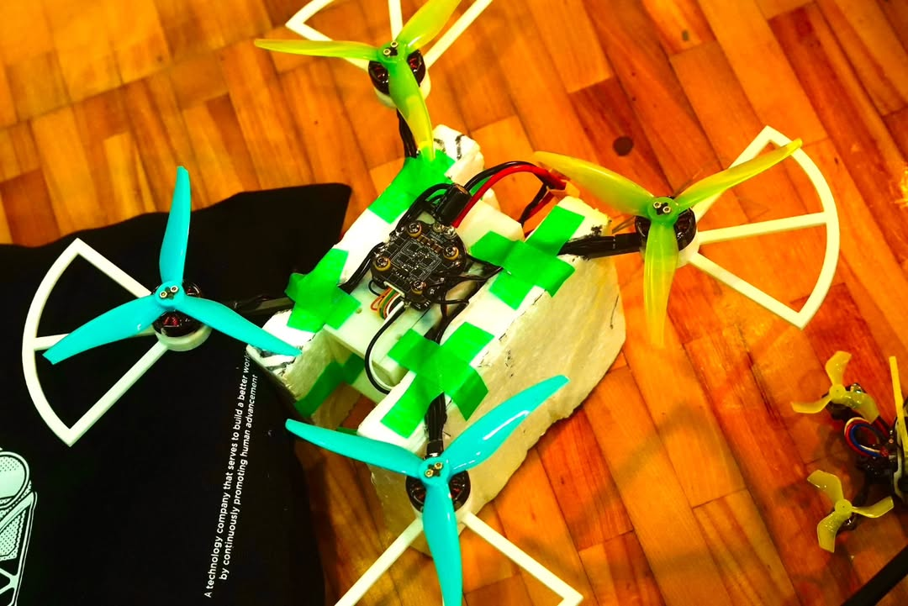
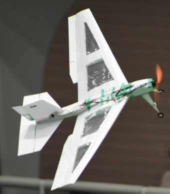

鳥取大学カルマンプロジェクト
大会用の機体製作中！ 新メンバーも募集してます！
当サイトについて
鳥取大学カルマンプロジェクトの公式ページです
このプロジェクトは2009年に発足しました
模型飛行機 や マルチコプター 等を製作し、 全日本学生室内飛行ロボットコンテスト に出場しています
メンバー募集中です！
新しい事に
挑戦してみませんか？
知識がなくても大丈夫。
学部学年問わず大歓迎です。
活動実績
- 2011年 大会決勝進出
- 2012年 4月5日 HP更新、新歓にむけての会議、サバンナ完成、サバンナ飛行 → 宙返り、ローリングが出来ました！！
- 2012年 4月8日 HP更新 サバンナのフライト2回目。動画を掲載します。
- 2012年 5月29日 HP更新 サバンナのフライト3回目。動画を掲載します。
- 2012年 10月 エグゾセ チームが決勝進出！！ 2年連続で決勝進出!!
- 2013年 新機体製作続行中、またメンバー2名が卒業
連絡先
最新情報はSNSをご確認ください！
X (旧Twitter): @TUKP_official
Instagram: カルマンプロジェクト公式Instagram


過去のホームページ
旧ホームページはこちらからご覧いただけます: http://tottoriuairplane.web.fc2.com/